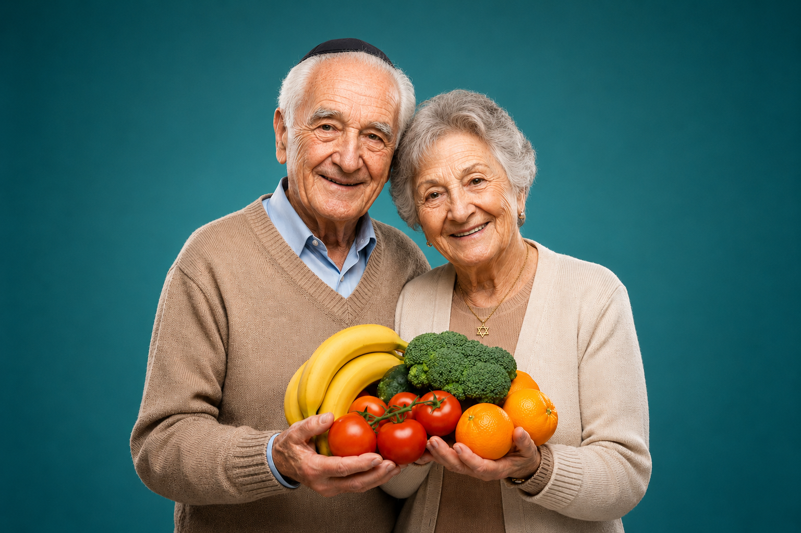

What this program provides
This program provides direct support services from The Blue Card to address urgent needs and improve day-to-day stability.
This program provides direct support services from The Blue Card to address urgent needs and improve day-to-day stability.
This program helps Holocaust survivors and, when applicable, family members or caregivers connected to survivor care.
Contact The Blue Card or use the application pathways on this site to request support, confirm eligibility, and begin next steps.
The Blue Card is deeply committed to advancing public understanding of survivors' unique needs, bridging the gap between historical trauma and modern clinical excellence.
We provide specialized training for medical professionals to ensure that survivors receive care that acknowledges their history without retraumatization.
Identifying cues that can cause distress for those who experienced wartime trauma.
Developing a vocabulary of empathy and precision for non-threatening dialogue.
Designing care spaces that prioritize agency and safety for elderly survivors.

Food security and proper nutrition are fundamental pillars of dignity. Our program provides personalized education on healthy eating habits and ensures access to essential vitamins and supplements.
No one should navigate medical challenges alone. Our volunteer network provides the vital human connection that clinical settings often lack.
Your contribution fuels the training, education, and outreach essential for ensuring survivors live with the dignity they deserve.